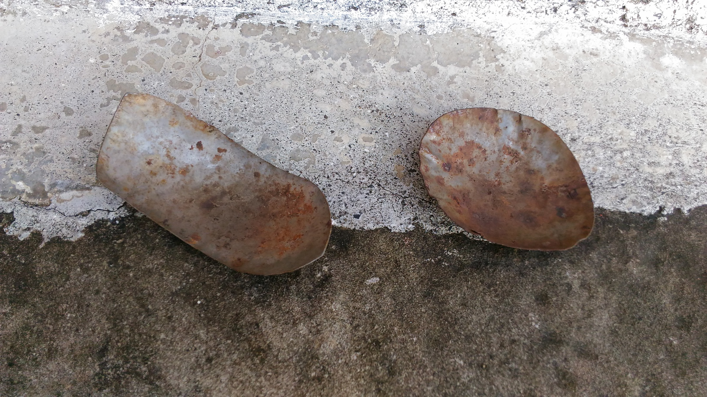
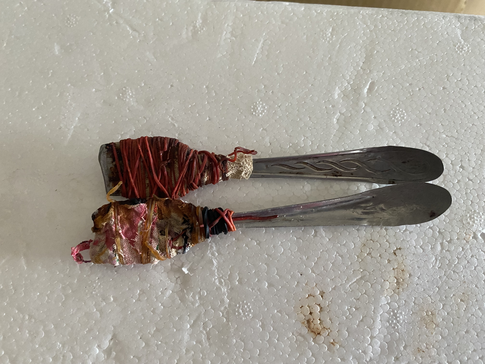
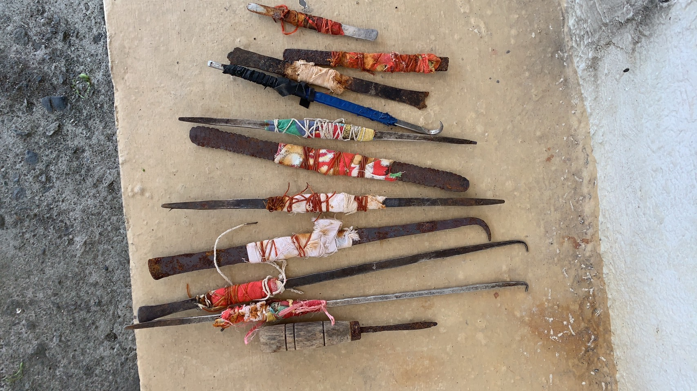
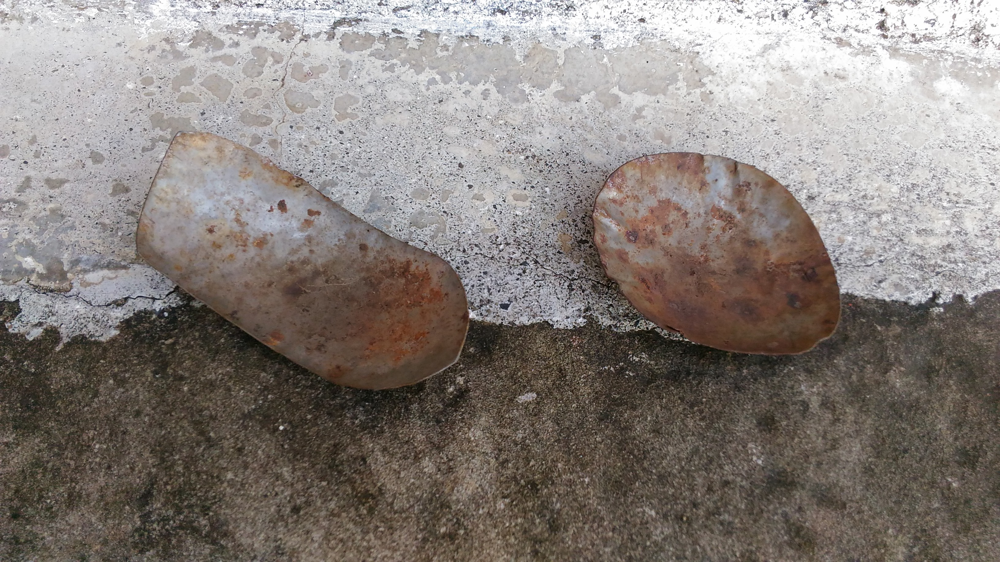
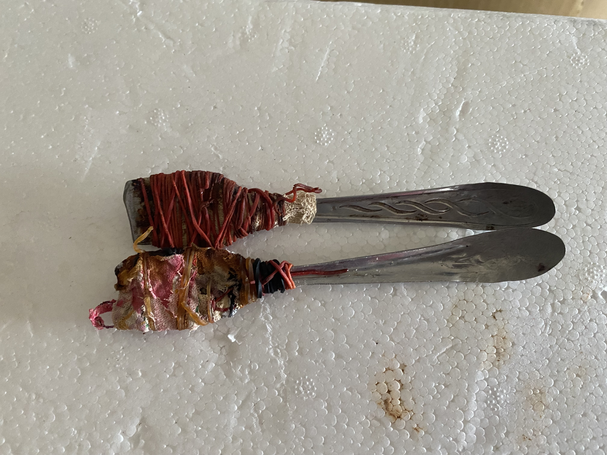
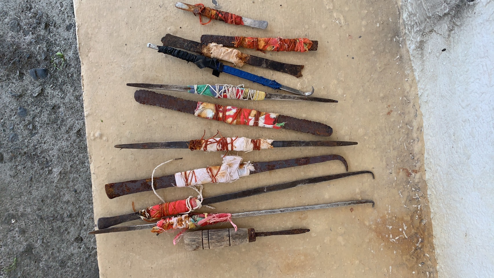

春日。暖陽 Living Life
旅行是去享受別人生活得地方這個春日,我在陽之下, 遇見在這片土片土地生活的人們
於是和他們一起生活,是旅行的方式

探索貢寮海女文化
見證沒落與復興
清末年間，透過跟琉球人習得的潛水技術，貢寮已經開始有人會潛入水中採集海菜。在日治時期，當時「貢寮庄」就有海女的存在，由於嚴格的海禁政策，所以當時的海女們必須取得「石花菜採取證」，才可以在規定的季節及時間前往海邊。二戰結束後，臺灣的漁業飛快的成長，每天漁船絡繹不絕的進出於卯澳、馬崗、福隆、澳底及龍洞的漁港。當男人出海捕魚時，在淺海處的石花菜及紫菜吸引了想貼補家用的當地婦女們，潛入近海裡採集石花菜。國民政府來臺後，儘管也有海禁政策，但「石花菜採取證」已被廢除，海女們工作起來也相對自由。


龍洞灣位處濱海公路旁，於貢寮區最北側，同時也東北角最大的海彎。龍洞灣命名由來為其蜿蜒的海岸如蛟龍盤踞，灣內海洋生態豐富，適合浮潛及海釣，同時南側由古老岩石構成的海崖是著名的攀岩場所。龍洞以其優美的景色及多元的遊玩方式吸引眾多遊客，是東北角著名的觀光景點。


澳底舊名「澚底庄」，亦可稱為「琉球澳」，因自古以來有琉球人居住而得此名。澳底最著名的事蹟便是1895年日軍由此地登陸，開啟了台灣日治時期。澳底三面環山一面靠海，擁有頗具規模的澳底漁港，且有濱海公路直接穿越其市區，為東北角沿岸最重要的漁港之一。由於地理環境良好，所以擁有著豐富的漁業資源，豐富的漁獲吸引了許多遊客慕名而來，是東北角著名的觀光景點之一。


卯澳位在濱海公路旁，是個歷史悠久的老漁村，村內共有三條溪流，它們匯集於此後入海，由於從高處俯視，形似「卯」字因此而得名。卯澳前有大海，後有山巒，是，由於獨特的海灣地形，因此它的海洋資源相當豐富，居民歷代皆已漁業維生。「石頭屋」是卯澳最具特色的建築物，建造成本較低，還可以避免海風侵蝕，是卯澳過去繁榮的象徵。

馬崗位處濱海公路旁，鄰近三貂角燈塔，是全台灣最東邊的漁村，以馬崗潮間帶、石頭屋及村內四處可見的貓咪聞名，也因此被人稱作「極東貓村」。此外，馬崗村海邊養殖著九孔，以及村內許多店家販賣的滷鮑魚吸引無數的饕客前來品嘗，以其新鮮的海產聞名。
海女要下水作業時，大大小小的裝備缺一不可，從身上的衣服再到腰間的配備，每個用品都有自己的用處，少了它們海女也只能望著漁獲興嘆，令人不禁好奇，這些小巧的工具究竟是什麼，它們又能帶來什麼用處呢？ 艷麗的陽光自西方照來，正值下午時分，海浪聲四起的馬崗漁村裡，一名婦女自兩層樓矮平房內走出，這本是一件稀鬆平常的事，但當訪談組們看到婦女身上的服裝及設備時，立刻發現到這名婦女還有另外一個身份，那就是馬崗漁村內為數不多的海女阿嬤。海女是一個人們還十分不熟悉的職業，自然而然的，人們對海女的一切感到好奇，人們想知道海女的一切，包括工作環境、收入及工作內容，還有最明顯的一點，那就是他們的裝備的作用到底是什麼，為什麼要在頭上載著頭套?為什麼全身包得密不透風?腰間的網子是做什麼的?那麼小的錘子有什麼作用?她們的蛙鏡是用什麼做的?無數的問題湧現，讓我們用圖文並茂的解說，來進行一場海女大開箱。 作成的蛙鏡，畢竟牢靠正是它的代名詞。
走在岸邊，豔陽高照，海女們在岸邊辛勤的撿著海菜及蚵仔，如此炙熱的太陽沒有人能忍受，但海女阿嬤的頭上有著一頂頂的斗笠，太陽就算再辣，也穿不過斗笠上的上的細竹，而海女阿嬤的臉頰也依舊的白皙。

想在鹽分十分高的海水裡潛水，一定要有良好的視力來引導著海女前進，也因此眼睛是海女潛水時的重點保護對象，必須要夠堅硬，夠持久的蛙鏡才能勝任這份工作，這也是為什麼在過去物質缺乏的年代，許多海女阿嬤們會喜歡這款用牛角製作成的蛙鏡，畢竟牢靠正是它的代名詞。
走海女阿嬤們在水下作業時，常常得徘徊在凹凸不平的岩石邊採集蚵仔或石花菜，一不小心就會被礁石給刮傷，所以手部的保護是十分重要的，也因此市面上十分常見且便宜的棉紗手套成為海女阿嬤她們在下水時保護雙手的不二選擇。
走沿岸的礁岩中藏著許多現嫩多汁的蚵仔，但一個一個把牠們搬開來實在是太累了，這個時候小巧卻銳利的尖頭錘便發揮了它的作用，輕輕地敲一下蚵仔殼，鮮嫩的蚵仔肉近在眼前，能更有效率的採集蚵仔，讓海女阿嬤離蚵仔大豐收又更靠近了一步。
當海女阿嬤們在岸邊辛勤的採收著海菜時，採收起來的海菜要放哪裡呢?容易攜帶的畚箕讓海女們愛不釋手，不僅方便攜帶，體積也不大，而且還不用擔心東西掉出去，採收海菜時絕對少不了它。

潛入水中時，光是游泳跟採集漁獲就已經夠費力氣了，如果還要一手拿著採集到的東西，想必海女阿嬤一定會大喊吃不消，所以不如在腰間掛上一個小小的網子，抓到什麼就往裡面塞，能夠專心的作業，想必今日的漁穫肯定會更多的。
 





春日。暖陽 Living Life
旅行是去享受別人生活得地方
春日。暖陽 Living Life
旅行是去享受別人生活得地方
春日。暖陽 Living Life
旅行是去享受別人生活得地方
春日。暖陽 Living Life
旅行是去享受別人生活得地方
春日。暖陽 Living Life
旅行是去享受別人生活得地方
春日。暖陽 Living Life
旅行是去享受別人生活得地方